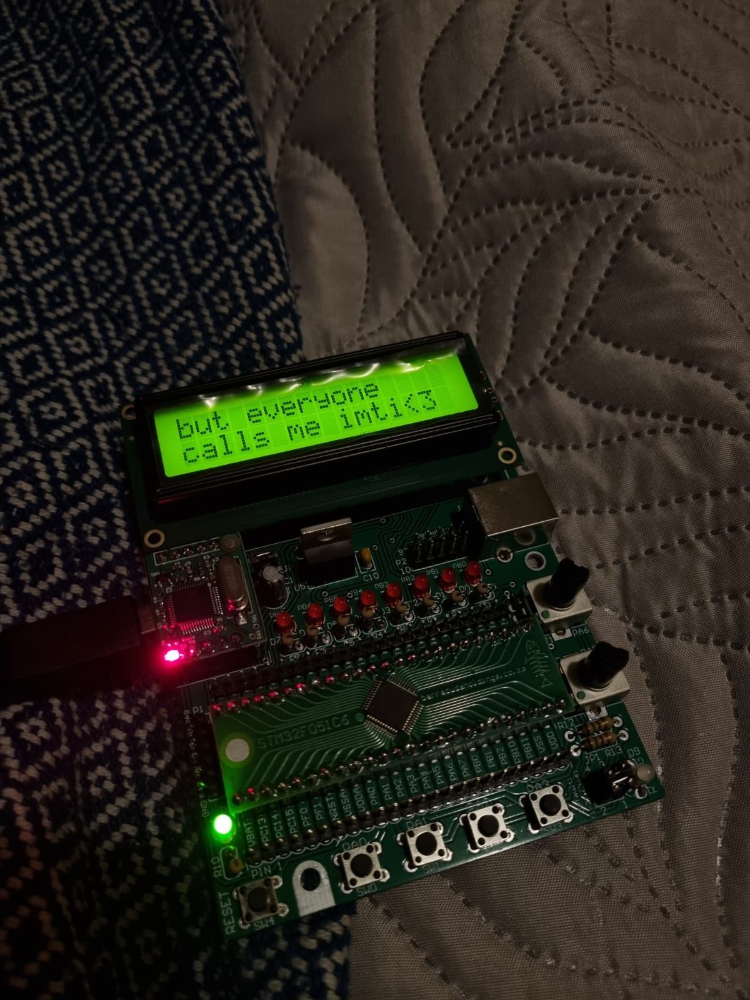
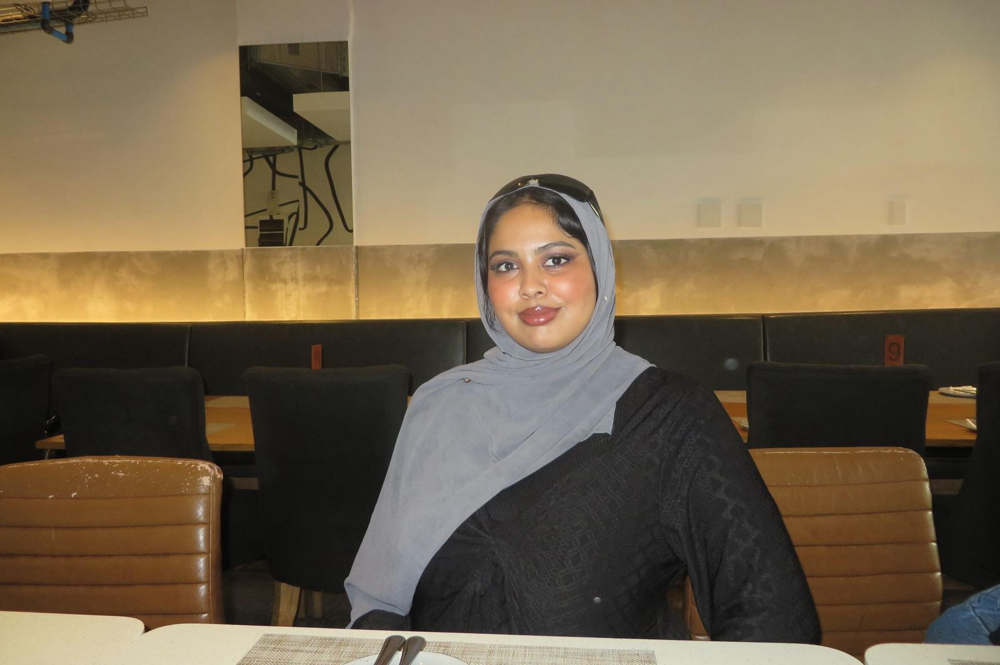
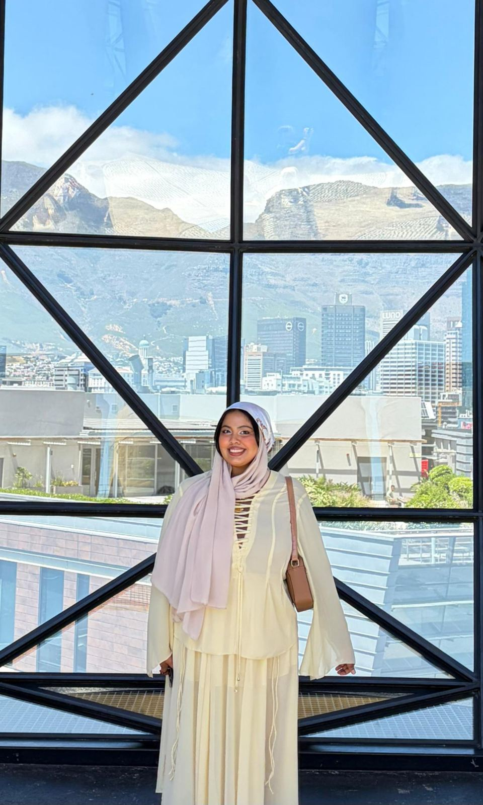
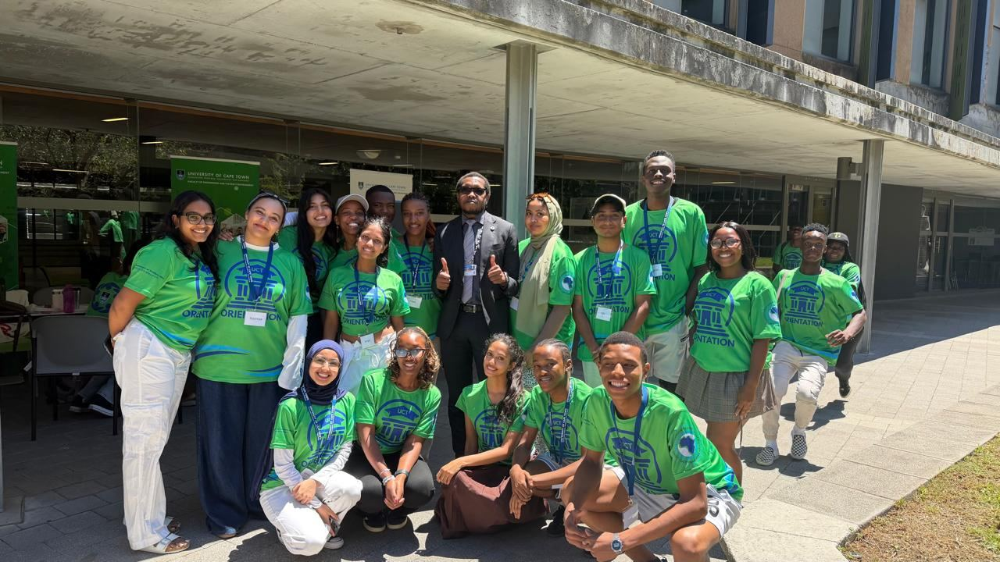
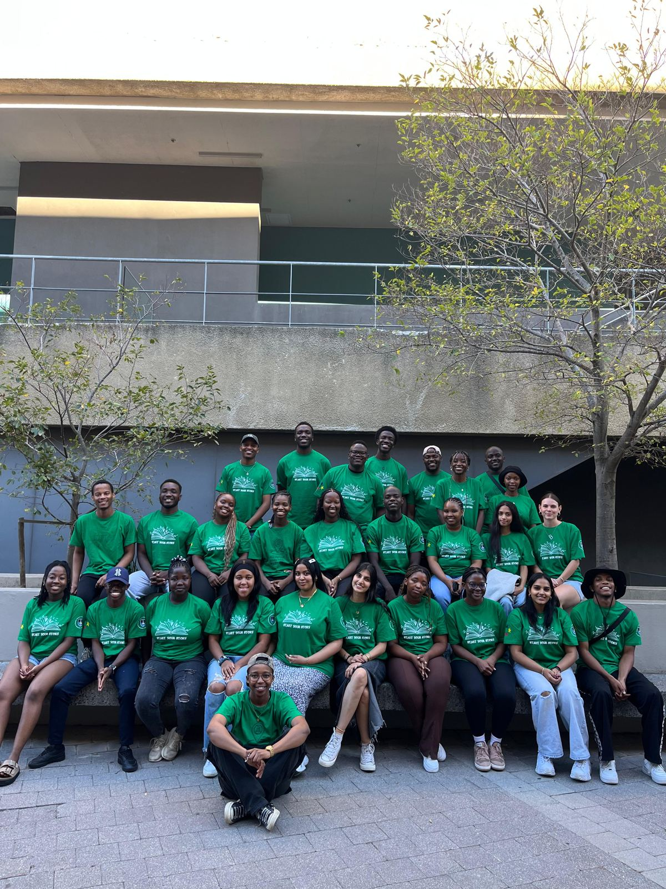

Hi, I'm Imtithaal Manuel
— but everyone calls me Imti.
I'm a final-year BSc Eng (Mechatronics, Electrical Engineering) student at the University of Cape Town, and on Wednesdays, I wear pink 💗. This is where I keep the circuits, code and chaos of my engineering journey — welcome in.

// the first board I ever soldered told you everything you need to know about me
Engineer, tutor, orientation leader, self-proclaimed LinkedIn warrior
I'm passionate about coding, robotics, AI and renewable energy — and I love getting my hands dirty with the hardware side of things just as much as the theory. Over the last four years at UCT I've built development boards, soldered power subsystems onto veroboard, chased bugs in Simulink models, and helped a virtual "kitticopter" learn to fly (long story, see Projects).
Outside of coursework, I tutor Electronic Devices & Circuits and Embedded Systems, mentor first years, and have spent two years as an Orientation Leader — most recently as Head EBE Orientation Leader. I'm a fast learner, a strong communicator, and a firm believer that engineering is better (and more fun) with more women in the room.
I'm fluent in English and conversational in Turkish and Afrikaans, comfortable across Python, Java, C, MATLAB/Simulink, and I've dabbled in basic Ubuntu/Rocky cluster and VM setup for high-performance computing (more on that under Experience).
🔗 Certified LinkedIn warrior
I'll admit it — I actually enjoy keeping my LinkedIn updated. If you want the more "professional" version of my updates, achievements and questionable enthusiasm for circuit diagrams, that's where you'll find me.
Connect with me on LinkedInA little component list of me
A few snapshots



